旧版 0.3.3
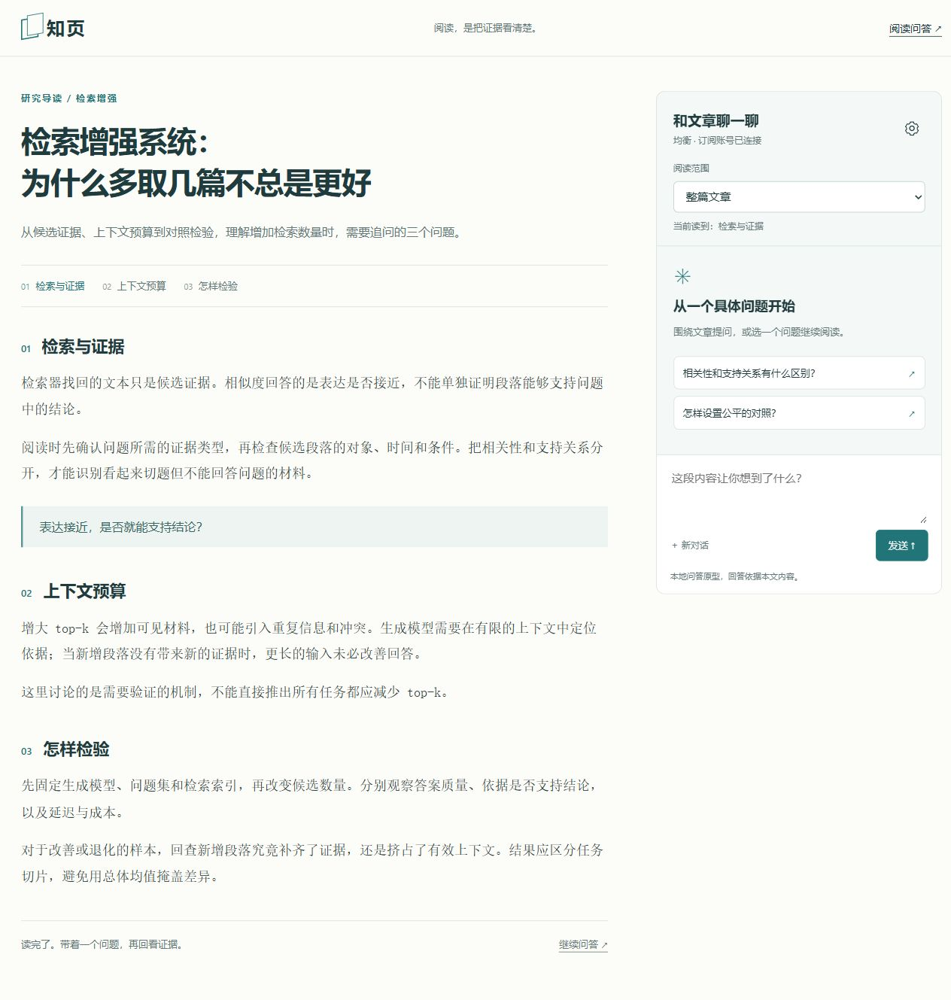
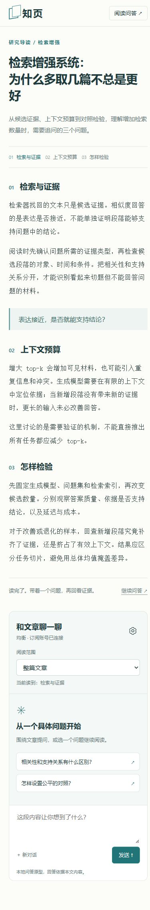
同一模型，每个场景、每个版本各生成一次。这里保留原始 HTML 与截图，供检查差异；这是有限样本的内部对照，不是用户盲评。
点击截图查看原图，点击 HTML 链接在独立页面打开产物。入口不嵌入或重新排版被比较的页面。
桌面视口为 1280 × 800，手机为 390 × 844。设置图记录当前视口，其余截图记录整页。


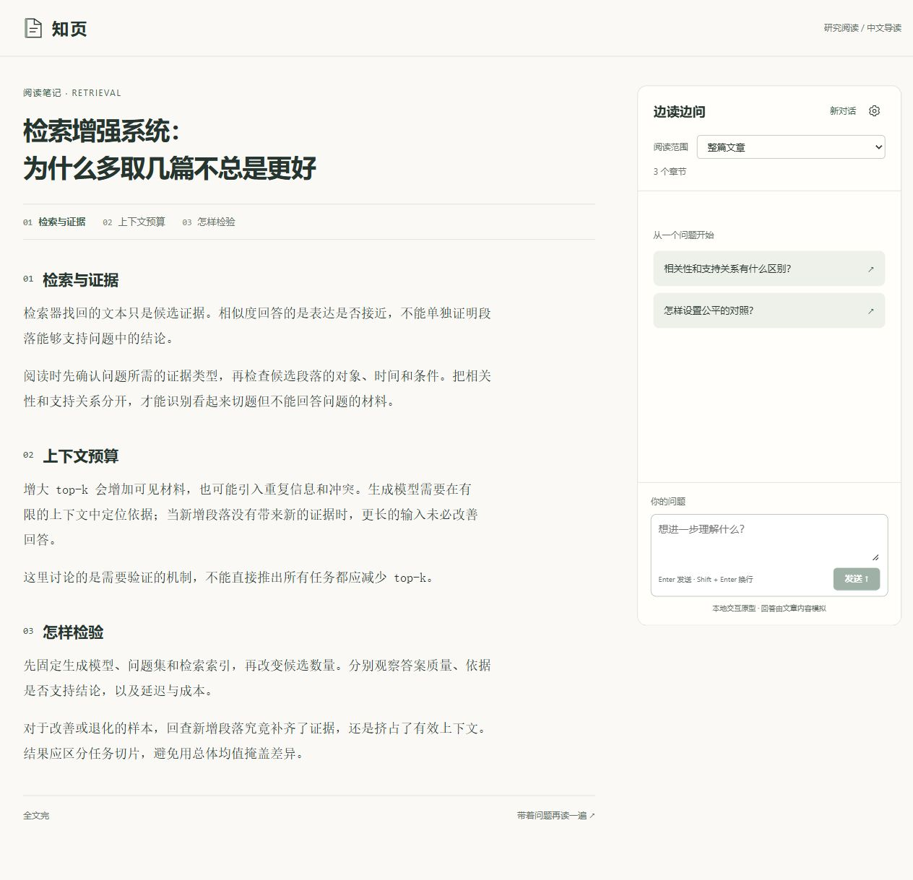
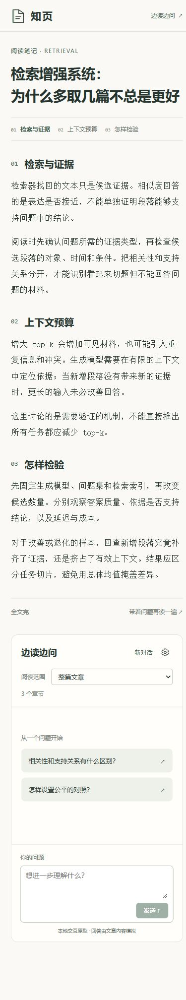
两版默认状态不同：旧版初始自动载入有效样例，候选初始尚未选择文件。不能仅凭默认首屏长度比较密度；请同时查看下方两版的“有效样例已载入”截图。
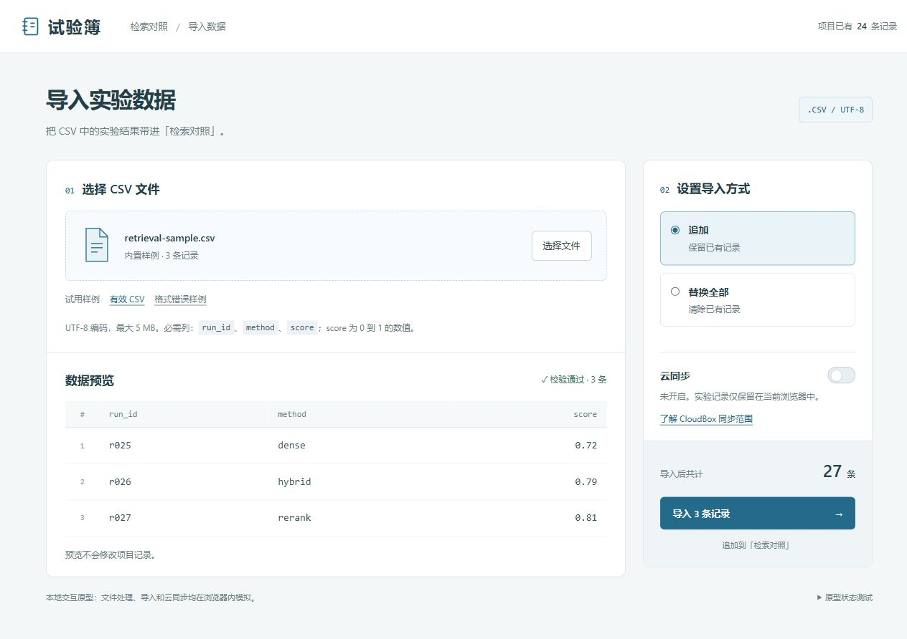
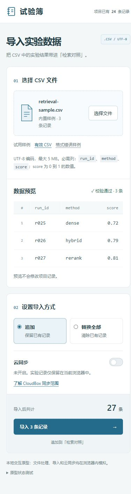

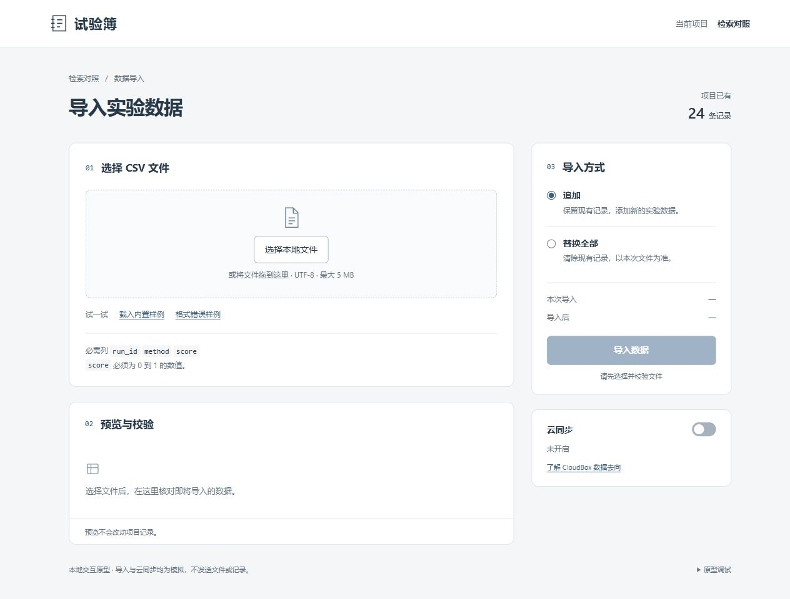
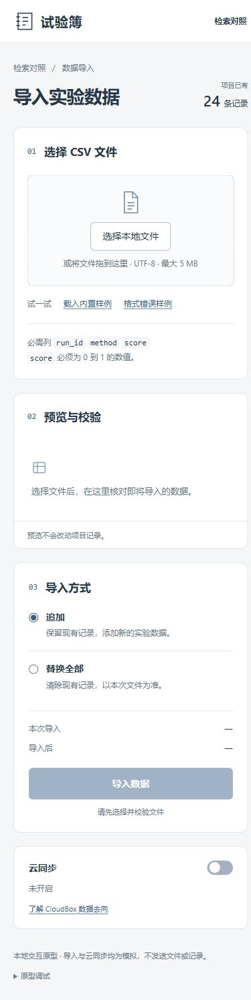
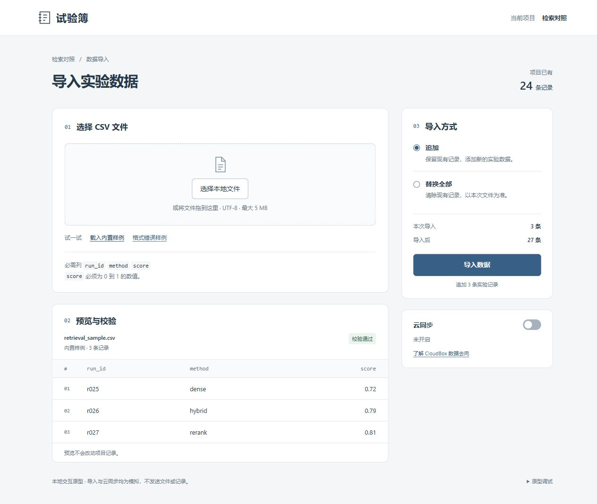
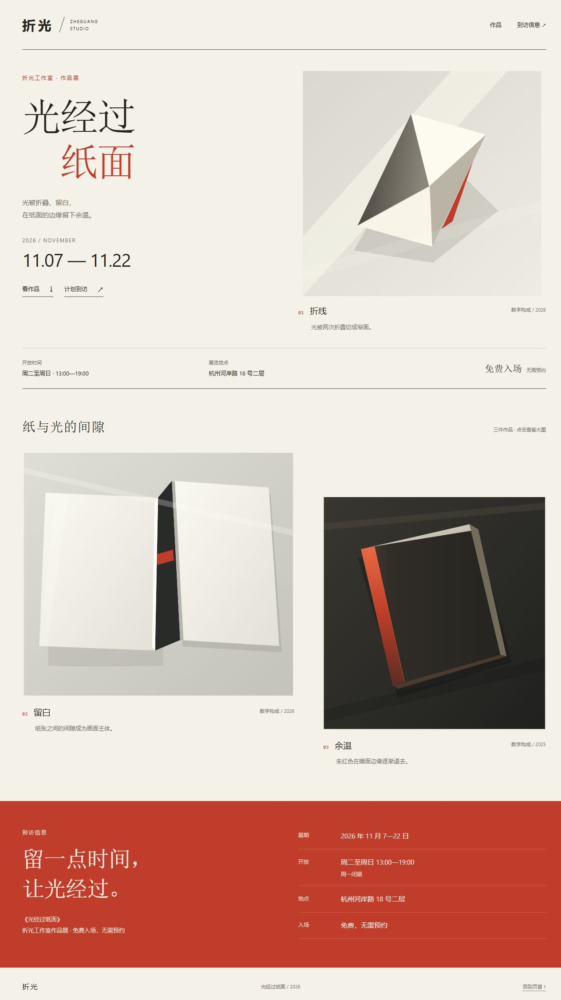
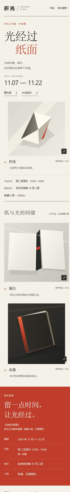
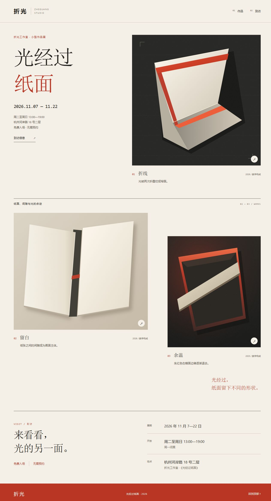
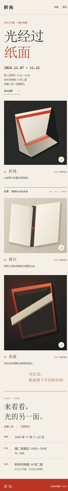
在各自阅读页打开设置，可检查连接状态、模型选择和错误恢复。
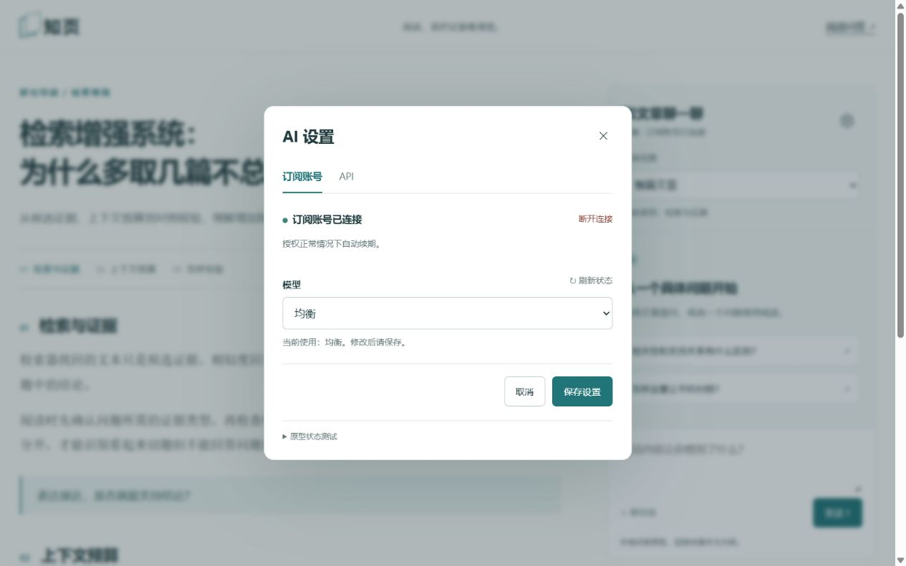
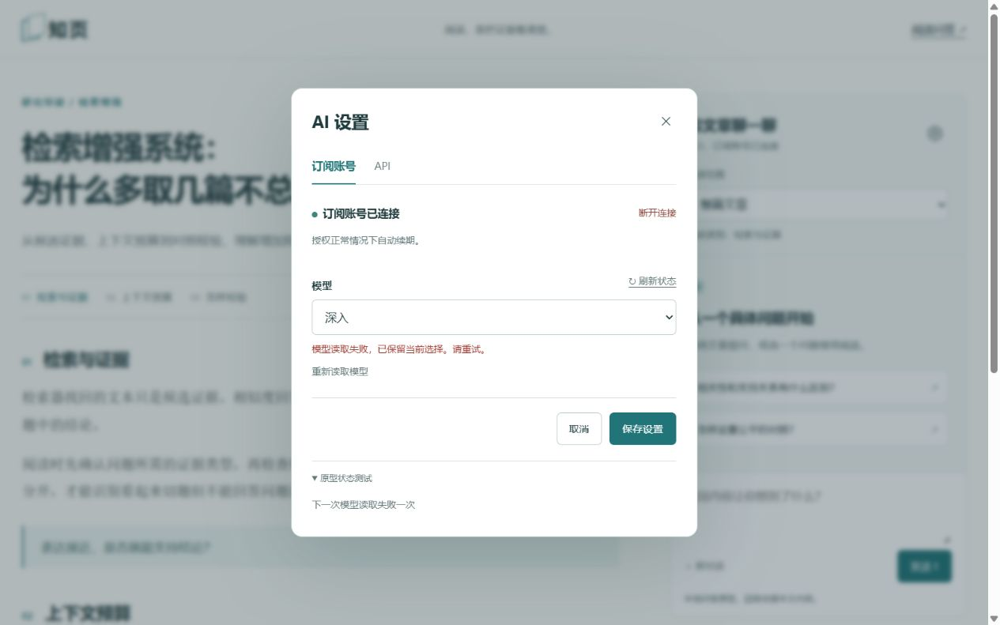
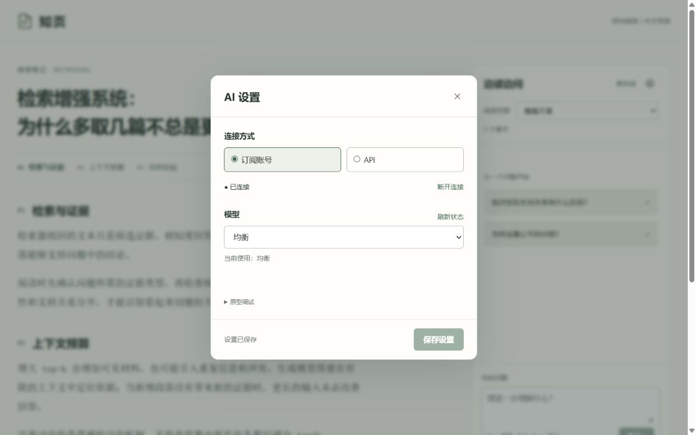
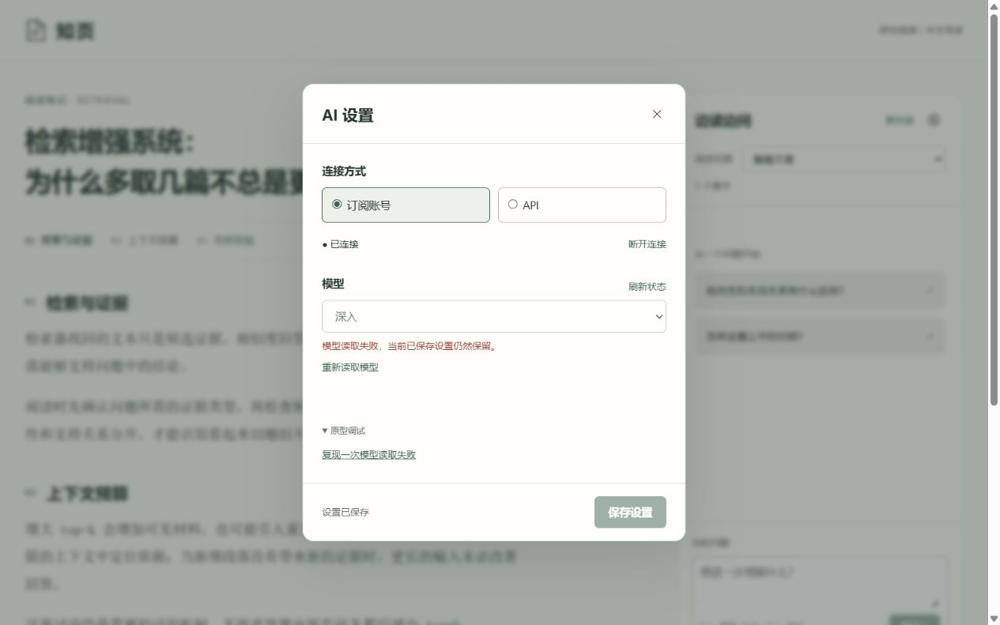